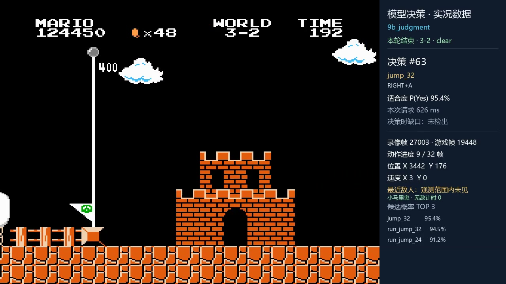
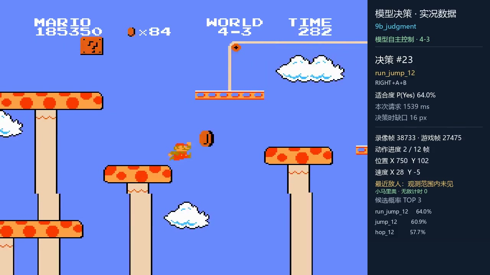

CASE 02 / Fast, effective action selection
Act at the right moment.
With enemies moving, terrain changing, and limited time to act, Fold-X repeatedly chooses whether to move, jump, or wait. The game runs on the left; the panel on the right shows the current state, selected action, and candidate scores.
Strategy now meets timing: as the environment changes, a useful decision must become an effective action quickly enough to matter.
Where this can help · Relevant to game agents, interactive applications, and action selection in systems with continuous feedback.
What the recording shows
- The recording shows continuous play across several levels and ends during World 4-3.
- The right-hand panel summarizes state and decisions. Candidate scores are not measured accuracy or probabilities of completing the game.
The recording illustrates action timing and outcomes. It does not establish a success rate across repeated runs, completion of the entire game, or control from raw pixels alone.
Reading the speed claims · The full recording is shown at 5× speed. Actual request latency must be measured from run logs, not inferred from playback.
Key frames





The public edit retains the game, current state, and action choices. Technical annotations at the bottom of the side panel are obscured.